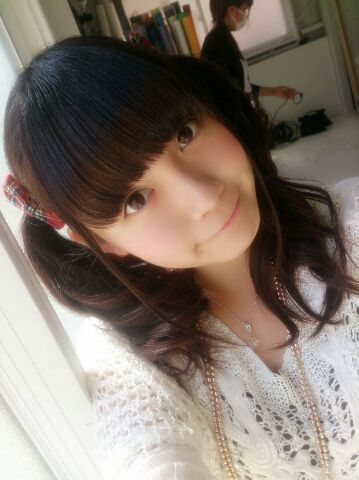
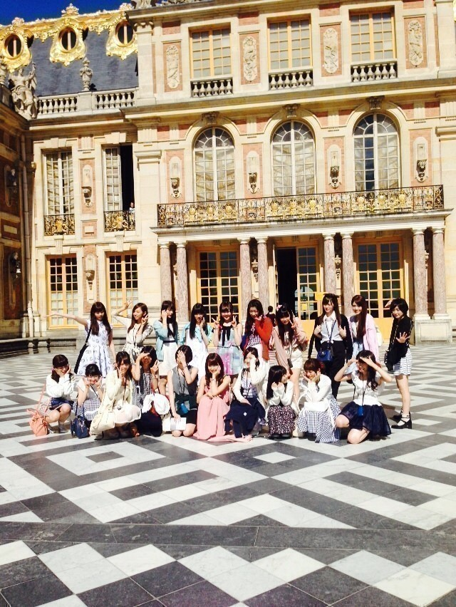
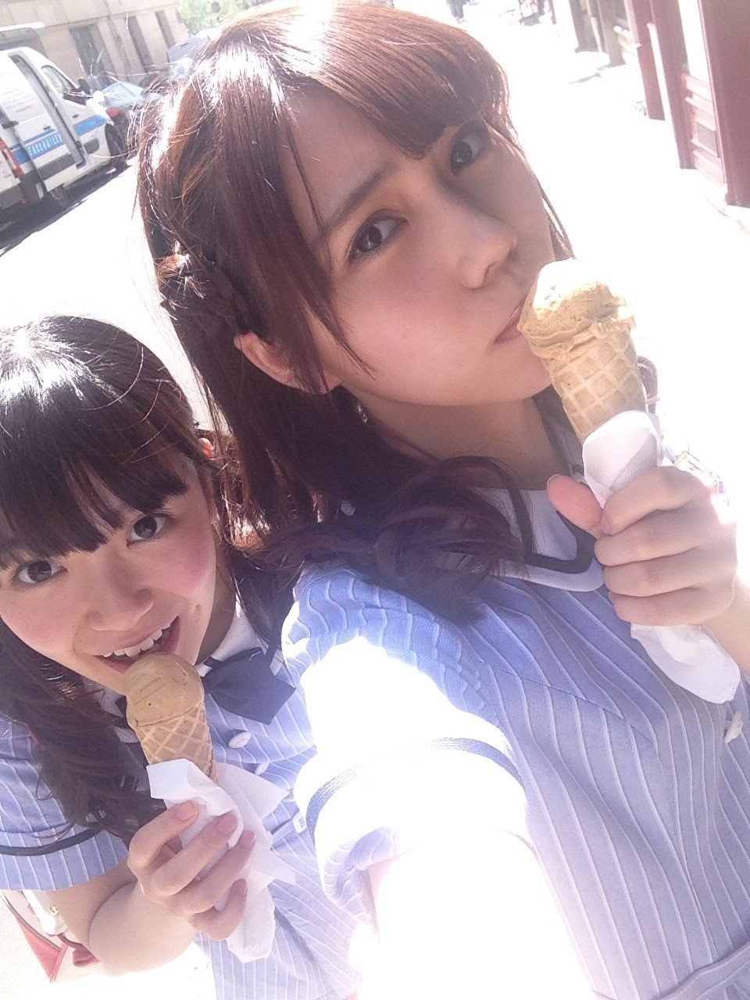
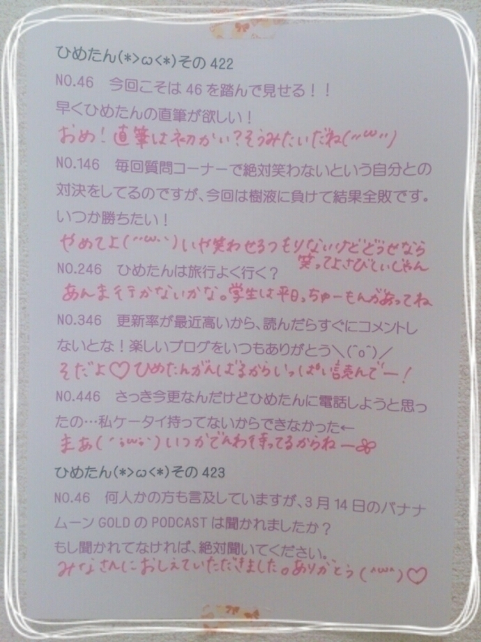
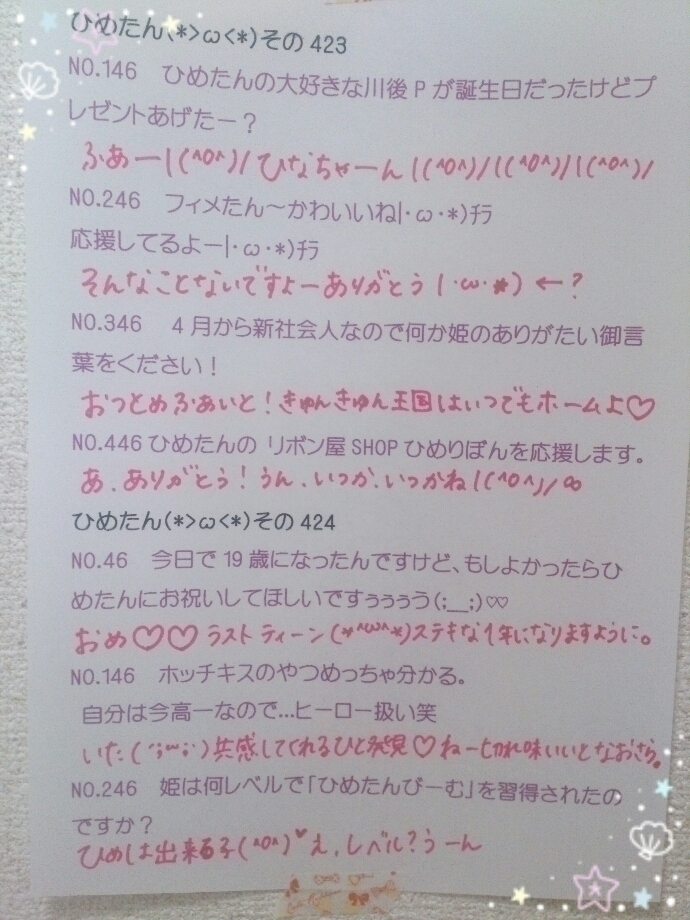

| 2014/08 09 Sat | ひめたん-OoO-その468 |
前回の記事には
本当にたくさんのコメント
ありがとうございました(´;ω;`)
僕にとって私にとって
ひめたんが一番のアイドルだよって
たくさんの方に言っていただけて
その言葉を聞きたくて
いつも頑張っているつもりなので
本当に幸せ者です( ˘ω˘ )
あとは「もっとファンを信じてよ」って
言葉で目が覚めました
そうでした、私はひとりじゃなかったね！
嬉しいことも悔しいことも
共有してくださるみなさんがいることを
いつも忘れちゃだめだよね！そうだその通りだ！
コメントを読んでると
みなさんは前向きなのに
私ひとりくよくよして情けない(｀・ω・´)
ひめたんがみなさんに笑顔をとか
いつもうだうだゆってるけど
結局いつもひめたんを元気にしてくれるのは
みなさんの方なんだよね
また救われちゃったよ(´・ω・｀)
もうほんとに
乃木坂ファミリーさんも
きゅんきゅん王国民のみなさんも大好き♡
これからもどうぞ
よろしくお願いします～＊
なんか、もうちょっと余裕が欲しいというか
割り切っていかないと
やってけないのかなーなーんて
あんまり表に出したがらないけど
案外ネガティブだからね(´-ω-`)きゃぴ

10thシングル個別握手会の日程が
発表されました☆
詳しくは公式サイトのお知らせを
チェックしてみてくださいね
ひめたんは今回も
関東4部制、京都・名古屋3部制って
聞いてます！
やっぱりひとりひとりちゃんと目を見て
ありがとうって言えるから
握手会って好きだなあ
だから都合が会えば
ぜひ遊びにきてほしいです( ˘ω˘ )
たまに制服の時に
「あれ、今日はりぼんないの？」
って聞かれるんだけど
制服の時はりぼんつけらんないから
ひめたんりぼん見られるのは個握だけだよー♪
待ってます♡
それからのぎ天#5更新されました！
パリクイズ後編いかがでしたか？


パリ＼(^o^)／
前編がオンエアされてから
握手会や日記のコメントなんかで
「ひめたんびーむいっぱいしてるね！」
「ひめたんびーむしすぎじゃない？」
とかたくさん言われてしまいましたが
あーゆークイズなの！だからいっぱいしたの！
さすがにちょっとやりすぎかなって
ひめたんも思ったけど！笑
クイズは難しい問題いっぱいあったけど
みなさんにもパリ気分を堪能していただけたなら
パリ4のみんなは嬉しいです◎
#6はJapan Expoのライブの様子を
たっぷりお届けするよー
選抜メンバー大集合回( ˘ω˘ )
次回の乃木ののは
中田花奈ちゃん
伊藤かりんちゃん です☆
かりんちゃんは乃木のの初登場です＼(^o^)／
初の乃木ののがひめたんMCのときなんて光栄！
ようこそかりんちゃん＼(^o^)／
かなりんはひめたんになってから2回目だね
今回もたくさんらぶらぶしましたよー♡
次回もお楽しみにっ

らりんがごはん連れてってくれたの
いつか一緒に行きたいーって言ってたから
やっと叶った\(﹡ˆOˆ﹡)/ありがとう！
らりんはきゅんきゅん王国民のみなさん公認の
お姉ちゃんだもんね～＊
いろんなお話して元気もらいましたっ
らりん、また連れてってください♡♡
まりか、今度はまりかもね！笑
まりかこれ読んでるかな？笑

 なんの動物に似てるとかある？
なんの動物に似てるとかある？
ハムスターってよく言われる
「ω」みたいな口をしてるらしい(´,,•ω•,,｀)
結局いかとかいはどっちが好きなの？
どっちもあんま好きくないのです。
個人PV撮影のとき監督さんにそれ言ったら
あらら～って(笑)
ひめたんとあしゅちゃんのコンビって 、
どうして
「 格差社会コンビ 」 って いうんですか ??
普段からよく格差社会について
話し合ってるからだよ♡♡♡
かわいくなーい( ˘•ω•˘ )
乃木の｢の｣にお便り出すのに、
いいラジオネームがなかなか浮かびません
ひめたんのセンスで、何かインパクトのある
ラジオネームをつけてくれませんか？?
可能ならひめたん推しなのも
盛り込みたいのですが、
難しければそれは無くてもいいです。
「きゅんきゅん王国の○○○」はいかが？
○○○はいつも呼ばれてるニックネームとか
入れてみて♪ひめたん何かしら反応するよー
みんなも使ってみてね♡
ひめたんの日記の
コメント欄下２ケタに46を踏んだ方へ
手書きでコメ返するコーナー
＼ ひめたん46 ／



いつもたくさんのコメント
本当にありがとうございます
全部読んだよー♪
いつも丁寧に読んでるけど
前回の記事は特別丁寧に読んだよー！
普段はあんま書かないけどって方も
いらっしゃって嬉しかった(＊´ω`＊)
ほんとはひとりひとりに
コメント返ししたいくらい。
だから心の中でコメント返ししておきました＊
届いたかなー届いてないだろうなー
届......かなかったひとは46踏んで！笑
全国ツアーのリハがんばってるよー
(＊´・ω・＊)
コメント(662)
2014/08/09 23:42